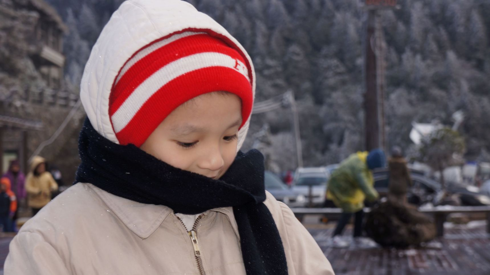
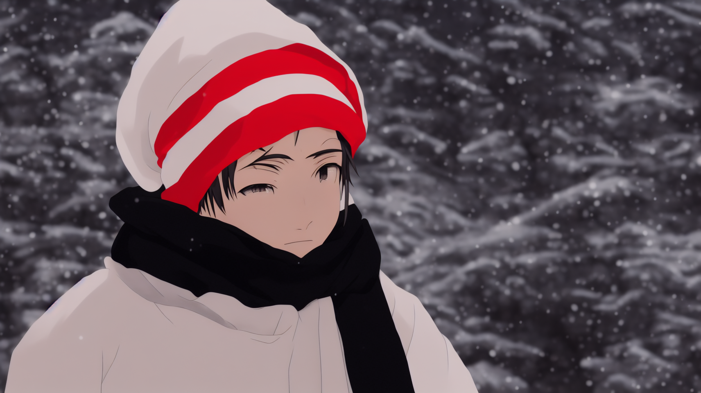
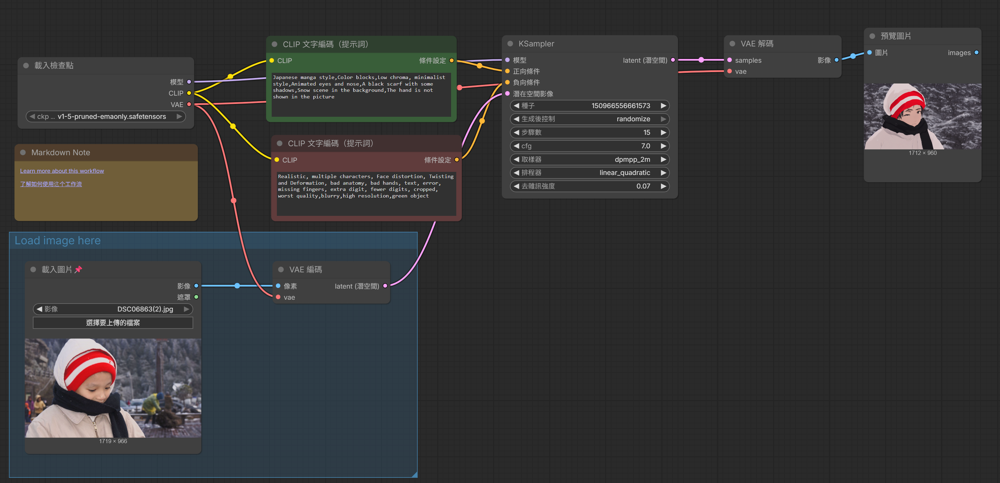

1152007 李廷恩



正提示詞：
Japanese manga style,Color blocks,Low chroma, minimalist style,Animated eyes and nose,A black scarf with some shadows,Snow scene in the background,The hand is not shown in the picture
反提示詞：
Realistic, multiple characters, Face distortion, Twisting and Deformation, bad anatomy, bad hands, text, error, missing fingers, extra digit, fewer digits, cropped, worst quality,blurry,high resolution,green object
一開始的提示詞生成時，出現許多臉部扭曲變形，或是出現許多人物在畫面中。後來不斷調整提示詞，並參考部分官方提供的提示詞，再加入自己想要的風格，開始出現一些符合想法的圖片，但仍有一些誤差，例如：太寫實、扭曲。所以我嘗試修改「去雜訊強度」的數值，調低到0.05~0.15之間，更符合原圖的輪廓與特徵，生成後發現能夠符合漫畫風格，並且不會出現其他的臉。但如果調低於0.05，會因為與原圖太像，變得太寫實。